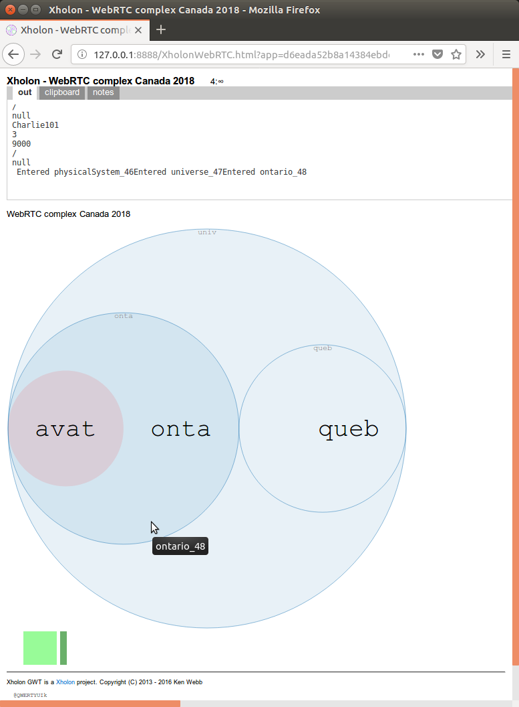
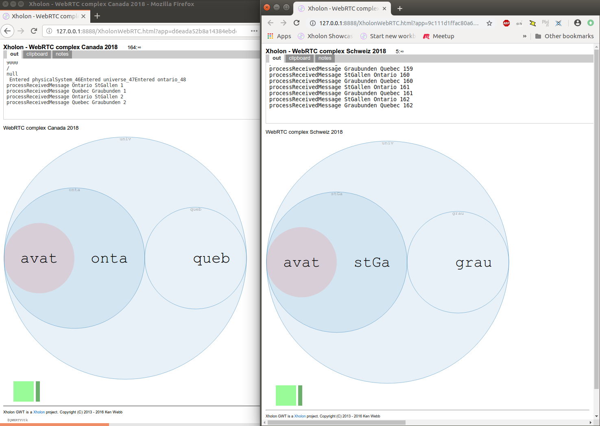
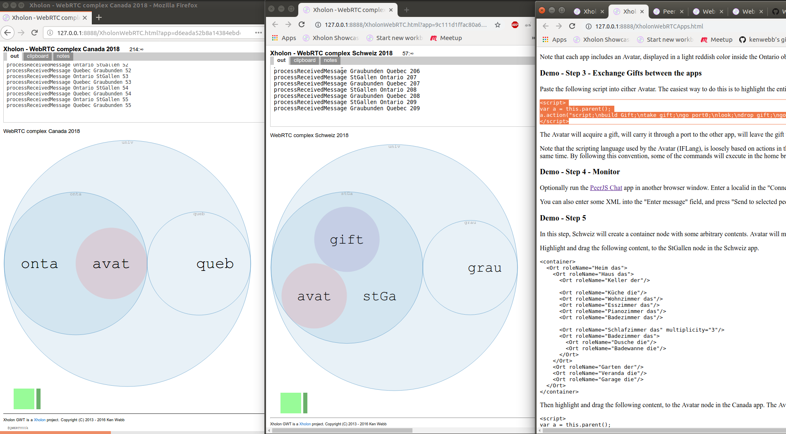
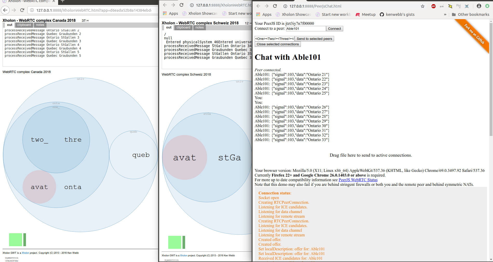
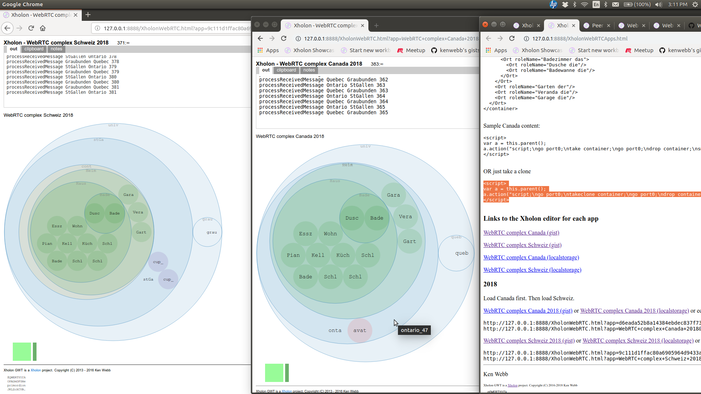

WebRTC (Web Real-Time Communication) is a peer-to-peer technology that directly connects browser applications. WebRTC support is built into Google Chrome, Mozilla Firefox, and other modern browsers which I have not yet tested.
This web page describes my initial test and demo of WebRTC, using 2 Xholon apps, with each app running in its own web page. I live in the province of Ontario in Canada, and I began putting this experiment together while visiting a friend in St. Gallen canton in Switzerland (Schweiz). The demo is based on exchanging text messages between Canadian province objects and Swiss canton objects. I use the PeerJS JavaScript client library to simplify my interactions with WebRTC, and I also use the PeerJS signaling server to help set up the connections between browsers. Xholon is an open-source project with a github repository.
Open this, and then this in separate new browser tabs or windows, and observe the exchange of messages between the two browser-based apps.
Start the Canada app in Firefox or Chrome. Alternatively, you can edit the localid parameters below, and drag, or copy and paste, the result into a browser URL line.
The resulting page should look similar to the following. The GUI includes a D3 Circle Packing (d3cp) animated SVG-based visualization, with abbreviated names inside each circle.
Start the Schweiz app in another Firefox or Chrome page. This second page can use the same browser as the first page (Chrome or Firefox)), or a different browser, and it can run on the same computer or on a different computer. Alternatively, you can edit the remoteid parameters below, and drag, or copy and paste, the result into a browser URL line. Note that the value for remoteid0 must match the value for localid0 in the Canada app, and the same for the other IDs.
Once this second page has loaded, the two apps should start to exchange regular test messages, as shown in the following.
Note that each app includes an Avatar, displayed in a light reddish color inside the Ontario object and inside the StGallen object. You can instruct an Avatar to move between the two apps, and perform various actions along the way.
Paste the following script into either Avatar. The easiest way to do this is to highlight the entire text starting with <script> and ending with </script>, drag this to the running app, and drop it directly on the Avatar object.
<script>
var a = this.parent();
a.action("script;\nbuild Gift;\ntake gift;\ngo port0;\nlook;\ndrop gift;\ngo port0;\n");
</script>
The Avatar will acquire a gift, will carry it through a port to the other app, will leave the gift there, and will then return home. All of this activity will animate within the two D3 Circle Packing (d3cp) GUIs.
Note that the scripting language used by the Avatar (IFLang), is loosely based on actions in the Inform 6 interactive fiction (IF) language. In a distributed environment, Avatar commands must be separated using "\n" so that they will be executed at subsequent timesteps rather than all at the same time. By following this convention, some of the commands will execute in the home browser, and others will execute in the remote browser.
As shown in the following image, the script was dropped on the Avatar in Ontario in Canada, and ended up in StGallen in Schweiz.
Optionally run the PeerJS Chat app in another browser window. Enter a localid in the "Connect to a peer:" field, for example enter Baker101 and press "Connect", to monitor that object.
You can also enter some XML into the "Enter message" field, and press "Send to selected peers". For example, <One> will create a new object of type One in the monitored app. <One><Two/><Three/></One> will create a small subtree with Two and Three objects inside a One container. Each line below includes some separate content that can be sent to the peer.
<Orange><Color>orange</Color></Orange>
<Attribute_String>How are things on the other side?</Attribute_String>
<Four><Anno>Four is a fantastic number. It's twice as wonderful as two!</Anno></Four>

In this step, Schweiz will create a container node with some arbitrary contents. Avatar will move from Canada to Schweiz, will take a container node, will return to Canada, and will smash the container to reveal the contents. As you can see, I was trying to learn some German.
Highlight and drag the following content, to the StGallen node in the Schweiz app.
<container>
<Ort roleName="Heim das">
<Ort roleName="Haus das">
<Ort roleName="Keller der"/>
<Ort roleName="Küche die"/>
<Ort roleName="Wohnzimmer das"/>
<Ort roleName="Esszimmer das"/>
<Ort roleName="Pianozimmer das"/>
<Ort roleName="Badezimmer das"/>
<Ort roleName="Schlafzimmer das" multiplicity="3"/>
<Ort roleName="Badezimmer das">
<Ort roleName="Dusche die"/>
<Ort roleName="Badewanne die"/>
</Ort>
</Ort>
<Ort roleName="Garten der"/>
<Ort roleName="Veranda die"/>
<Ort roleName="Garage die"/>
</Ort>
</container>
Then highlight and drag the following content, to the Avatar node in the Canada app. The Avatar will take the container with all of its contents, and move it back to its home where it will remove (smash) the outer container.
<script>
var a = this.parent();
a.action("script;\ngo port0;\ntake container;\ngo port0;\ndrop container;\nsmash container;\n");
</script>
OR you can have the Avatar just take a clone, and leave the original intact.
<script>
var a = this.parent();
a.action("script;\ngo port0;\ntakeclone container;\ngo port0;\ndrop container;\nsmash container;\n");
</script>
This final screenshot shows parts of three browser windows. The left window is the "Schweiz" app running in Firefox. The center window is the "Canada" app running in Google Chrome. The right window is an early version of this web page, with highlighted "orange" content about to be added to one of the other two windows.
I test the Xholon software using a local server. I'm including these additional URLs for my own convenience.
Canada
WebRTC complex Canada 2018 (localstorage)Schweiz
WebRTC complex Schweiz 2018 (localstorage)Links to the Xholon editor for each app
WebRTC complex Canada 2018 (gist)
WebRTC complex Schweiz 2018 (gist)
WebRTC complex Canada 2018 (localstorage)
WebRTC complex Schweiz 2018 (localstorage)
Links to Xholon workbook at github for each app
WebRTC complex Canada 2018 (view at github)
WebRTC complex Schweiz 2018 (view at github)
Things that can be sent to another App include: the current IXholon inventory (and/or subtrees) of an Avatar, Avatar IFLang instructions, a Xholon <script as XML and JavaScript (security issues), text, JSON, JavaScript Object, etc./>
Run any or all of the following URLs, in separate browsers and/or on different computers.
Run each app for awhile, and then collect data by pressing the "$" key (remember to press the Shift key). Then press "p" to continue. Make sure you do this separately for each app.
Run the WebRTC Island Admin tool, on whatever browser and computer you want.
Drag the following script into the Avatar.
<script>
var a = this.parent();
a.action("script;\ngo port0;\ntakeclone dataExport;\ngo port0;\ndrop dataExport;\n");
</script>
The Avatar will vanish, and should return a short time later with the data in a "DataExport" node.
Move the Avatar to each of the other "Player" nodes, and drag the same script into the Avatar while it's there.
Ken Webb
Xholon GWT is a Xholon project. Copyright (C) 2016 - 2018 Ken Webb
@QWERTYUIk
OPASmDFGHe
primordion
JKLZcXCVB.